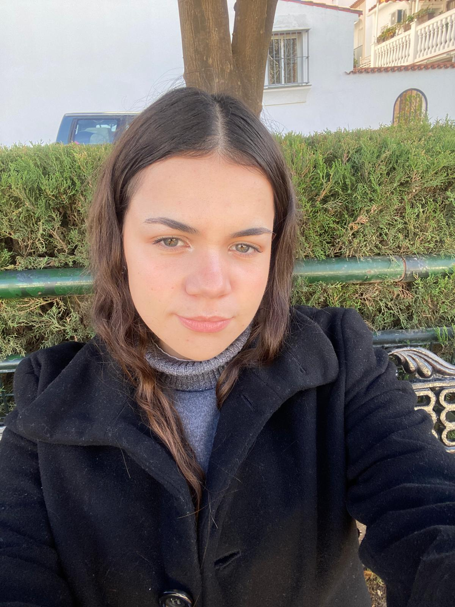
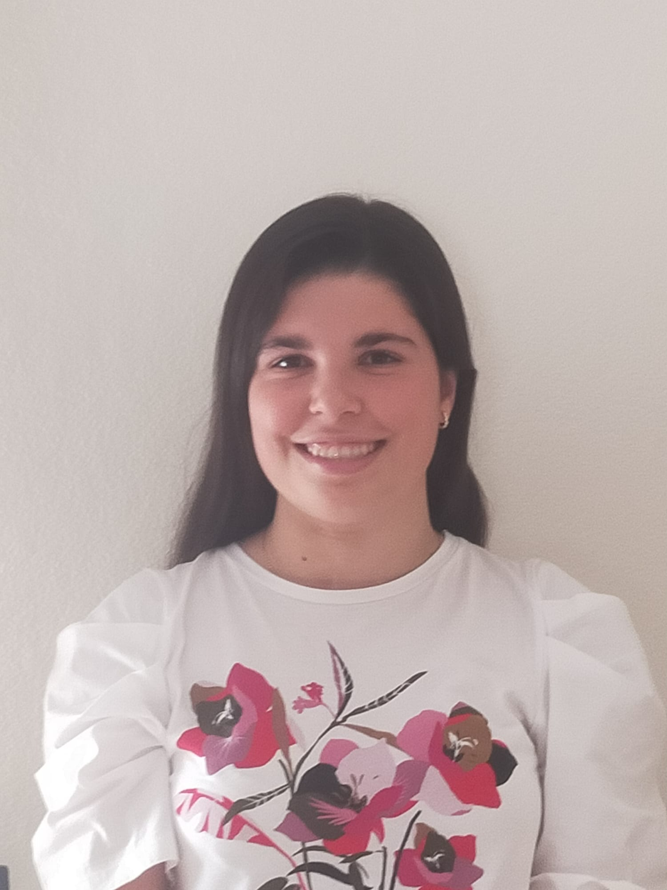
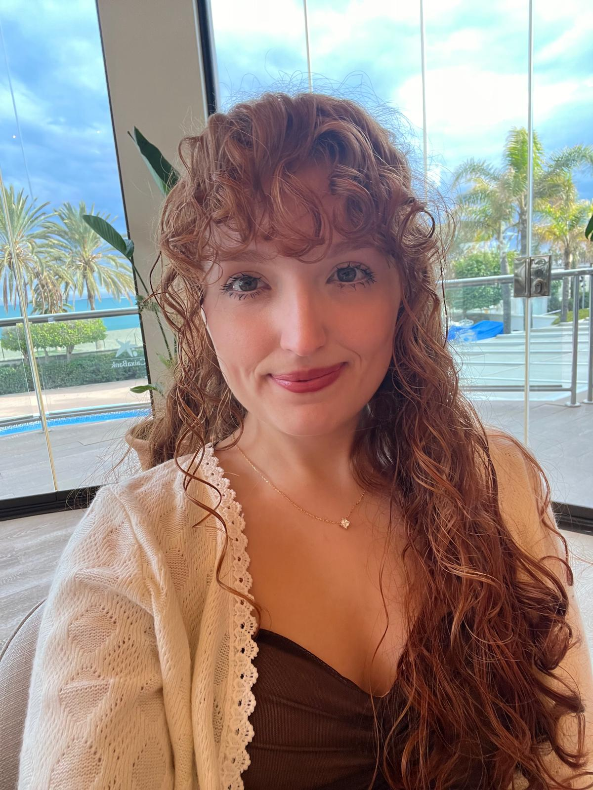
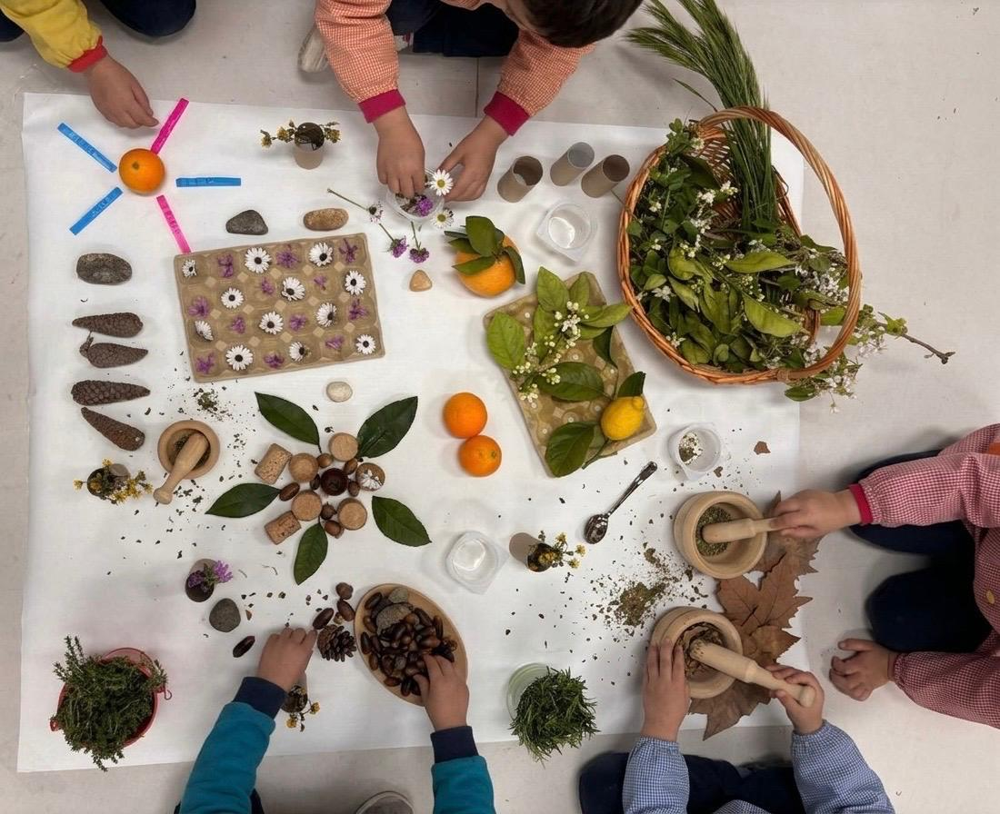
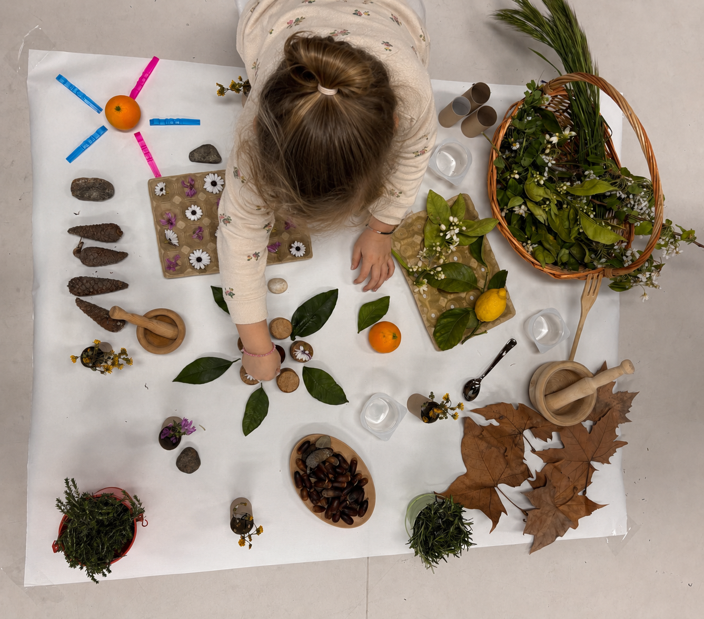

"Habilitar los tiempos, cuidar los espacios y dar voz a la infancia."
Nuestro Equipo
Grupo 5 - C2 Facultad de Ciencias de la Educación, Universidad de Málaga.
INTEGRANTES:

Irene Marín Moreno

Lucía Cuesta Plaza
Noelia Tejada Fuerte
Cristina Moreno Solero

Rebeca Aragón Armario
Asignatura: Organización Escolar en la E.I | Docente: Rocío Pascual Lacal
El nacimiento de nuestro ecosistema
En la etapa de Educación Infantil, la organización del centro no puede ser un mero trámite burocrático o administrativo; debe ser una declaración de intenciones hacia la infancia y sus derechos. Con esta profunda convicción pedagógica nace "La Escuela Viva del Reencuentro".
A lo largo de este libro digital interactivo, presentaremos un modelo organizativo propio e híbrido. No somos una franquicia educativa. Hemos analizado críticamente el panorama actual y hemos extraído los pilares fundamentales de diversas pedagogías activas para crear nuestro propio ecosistema:
Hemos construido y fundamentado nuestra propuesta organizativa integrando y enriqueciendo los siguientes modelos y pilares:
Reggio Emilia
Adoptamos la estética, la documentación pedagógica y la figura del atelierista en el espacio como "Tercer Maestro".
Bosquescuelas
Integramos la inmersión natural y el respeto por los ritmos biológicos y tiempos lentos de la infancia.
Pikler
Respetamos el movimiento libre del niño y su actividad autónoma como motor de desarrollo.
Montessori
Fomentamos la autonomía a través de un entorno preparado y adaptado a las necesidades infantiles.
Inclusión Real
El espacio y la organización escolar se adaptan al niño/a, garantizando el "Derecho a la Diferencia".
Te invitamos a navegar por nuestro modelo, donde los espacios educan, los tiempos se respetan y las provocaciones son el corazón del aprendizaje.
Bloque 1
Concepto de Infancia y Modelo de Escuela
Nuestro modelo se fundamenta en la relación recíproca entre la imagen de la infancia, el marco legal y nuestras líneas pedagógicas. Haz clic en cada pilar del esquema para abrir los detalles y ampliar la información.
La Infancia
Entendida como constructora activa de cultura y ciudadana de pleno derecho.
Ver detalles
Marco Legal
Decreto 100/2023 y LOMLOE aplicados a la inclusión real.
Ver detalles
Líneas Pedagógicas
Hibridación del modelo: Reggio, Bosque, Pikler, Montessori y DUA.
Ver detalles
Nuestra Escuela en Acción
La teoría pedagógica cobra sentido a través de las experiencias reales, la manipulación de materiales naturales y la documentación de las provocaciones cotidianas de los niños.
La infancia libre y autónoma
Mandala Estacional: Nuestra Provocación

La documentación pedagógica del juego
Bloque 2
Dimensión Material: Espacios, Recursos y Tiempos
Cómo diseñamos el entorno físico, los materiales y el ritmo cotidiano en nuestra escuela viva.
Los Espacios
El diseño espacial no es un elemento accesorio; los espacios educan de forma silenciosa. Basándonos en Reggio Emilia y en las propuestas de la arquitecta Rosan Bosch (2018), rompemos con la estructura del aula tradicional de pupitres. Creamos paisajes de aprendizaje flexibles e inclusivos que fomentan la libre circulación, el juego cooperativo y la inmersión directa en la naturaleza como la gran escuela del asombro.
"En nuestra escuela, el espacio no es solo un contenedor, sino un agente activo que acoge, provoca y dialoga con la acción infantil."
Los Recursos
Apostamos por la teoría de las Piezas Sueltas (Nicholson, 1971) y los recursos desestructurados y naturales. Alejándonos de los juguetes comerciales con una única función, seleccionamos materiales abiertos (troncos, piedras, telas, arcilla, agua) que no determinan qué hacer, sino que estimulan el juego heurístico, la creatividad infinita, la manipulación sensorial y el pensamiento científico autónomo.
"Los recursos desestructurados no dictan el juego; invitan a la infancia a inventar sus propias reglas, transformando lo ordinario en extraordinario."
Los Tiempos
Frente a la aceleración y la prisa constante impuesta por la rutina del adulto (que genera cronopatía), habilitamos tiempos lentos e integrados inspirados en las Bosquescuelas. Organizar el tiempo de forma flexible y dilatada permite respetar los ritmos biológicos individuales de cada niño/a, dando el espacio necesario para que se sumerjan en la exploración sin interrupciones arbitrarias.
"Respetar los tiempos de la infancia es el mayor acto de cuidado, permitiendo habitar el presente con calma y asombro."
"Habitar los tiempos, cuidar los espacios y dar voz a la infancia."
La dimensión material de nuestro centro da soporte físico a nuestra imagen de infancia: un niño activo necesita espacios libres para moverse, materiales abiertos para crear y tiempos pausados para vivir.
Bloque 3
Dimensión Humana y Relacional
La organización de nuestro centro sitúa las relaciones humanas en el centro, sustituyendo las estructuras jerárquicas y aisladas por redes de colaboración y afecto.
La Pareja Educativa
Superamos la figura clásica del maestro aislado en su aula. Al organizar el equipo docente en parejas pedagógicas, posibilitamos que dos miradas acompañen simultáneamente el juego y la exploración de los niños/as.
Co-observación: Registro compartido para comprender las necesidades e intereses de la infancia de forma objetiva.
Debate y reflexión: Deconstrucción del sesgo individual, enriqueciendo la planificación de las provocaciones.
"Dos miradas atentas y cruzadas multiplican la comprensión y el respeto hacia el universo infantil."
Familias Aliadas
Las familias son consideradas verdaderas co-constructoras de la escuela. Lejos de ser meras espectadoras, participan activamente en las decisiones organizativas, enriqueciendo los proyectos del aula.
Diversidad familiar: Acogida plena de todos los modelos familiares, garantizando la equidad desde el diseño.
Cultura material compartida: Colaboración activa aportando y recolectando materiales naturales y de desecho.
"Familias y escuela tejiendo juntas una comunidad viva que abraza y sostiene la vida de la infancia."
Cultura del Encuentro
Nos basamos en la "Ética del encuentro" (Dahlberg et al., 2005) y en un liderazgo democrático y horizontal. El conflicto no se reprime ni se castiga de forma autoritaria, sino que se habita de forma dialógica.
Pedagogía de la escucha: Respeto activo hacia las opiniones y deseos expresados por los niños/as.
Encuentro democrático: Toma de decisiones compartida a través de asambleas horizontales.
"Acoger la discrepancia y el diálogo como las herramientas éticas del verdadero encuentro democrático."
"La escuela es, por encima de todo, una red relacional."
Sustituir el aislamiento docente por la pareja educativa, y las jerarquías por la participación familiar y la escucha infantil, permite a nuestra organización escolar ser un ecosistema verdaderamente coherente.
Bloque 4
Evaluación y Mejora Organizativa
La evaluación en nuestra escuela viva no es un proceso de control para medir resultados en el alumnado, sino una herramienta democrática y formativa de reflexión sobre la práctica docente y el diseño organizativo.
Evaluación Formativa e Inclusiva
Rechazamos evaluar o calificar los aprendizajes de los niños/as de forma tradicional. No se miden resultados académicos ni destrezas aisladas, garantizando una inclusión real sin etiquetas ni comparaciones académicas.
¿Qué evaluamos? Si nuestro modelo organizativo (los espacios, los tiempos y los recursos) da respuesta real al interés de la infancia, promoviendo el asombro y el aprendizaje libre.
La Documentación Pedagógica
Inspirada en la pedagogía de Reggio Emilia y las aportaciones de Carlina Rinaldi (2006), la documentación es una "actitud de escucha" permanente. Recogemos fotografías, grabaciones de voz, dibujos y transcripciones literales del diálogo infantil durante el juego libre.
Este material no se archiva en una carpeta; se analiza colectivamente entre docentes y se expone a las familias, haciendo visible lo que suele ser invisible: el complejo y rico proceso de pensamiento del niño/a.
Revisión y Mejora Continua
Asambleas Compartidas:
Docentes y familias analizan juntos la documentación pedagógica para comprender el juego infantil y ajustar el entorno escolar a sus necesidades de exploración.
Memoria de Autoevaluación:
Un documento dinámico donde el equipo docente plasma compromisos de mejora organizativa concretos basados en la documentación del curso.
Ejemplo de Documentación Real
Panel: "El Asombro en las Manos"
Registro fotográfico y discursivo tomado en la provocación del Mandala.

"¡Mira Lucía, si pongo la naranja en el centro de los corchos parece una flor calentada por el sol!"
— Sofía (4 años)
Interpretación Pedagógica (Atelierista):
Se demuestra la autogestión de habilidades geométricas al buscar simetrías. El material desestructurado (cítricos e hilos) estimula analogías poéticas ("flor calentada por el sol"), fusionando ciencia matemática elemental y expresión creativa libre.
"El desorden final de la provocación no es desorganización; es la prueba documentada y visible de que el aprendizaje ha sucedido."
Anexos
Nuestra Provocación
El Viaje Sensorial de las Estaciones
El Viaje Sensorial
Para llevar a la práctica nuestro modelo, hemos diseñado una provocación sensorial. Se trata de un escenario preparado con gran intencionalidad pedagógica y cuidado, sin instrucciones de uso, pensado exclusivamente para despertar el asombro y la acción autónoma del alumnado, que se convierte así en constructor de su propio aprendizaje.
Fundamentación teórica
1
Instalaciones de JuegoBasándonos en Abad y Ruiz de Velasco (2011), diseñamos visualmente un espacio con contrastes estacionales que actúa como una auténtica invitación estética al juego.
2
Teoría de las Piezas SueltasSiguiendo a Nicholson (1971), priorizamos el uso de materiales inclusivos (DUA) y no estructurados, dándoles a los niños la libertad de darles el significado que ellos decidan.
Nuestros recursos
Elementos de otoño
Integramos elementos como hojas secas y cilindros de madera que ofrecen texturas únicas y sonidos naturales al manipularlos.
Cítricos y flores
Usamos naranjas y limones frescos para estimular el olfato y generar contrastes visuales muy atractivos.
Elementos contenedores y estructurantes
Hueveras de cartón, cilindros de cartón y morteros de madera. Son fundamentales porque invitan a los niños a realizar trasvases, practicar el agarre de pinza y empezar a clasificar de forma intuitiva.
Reflexión Final y Referencias
Reflexión sobre nuestro proyecto
Llevar a la práctica este modelo organizativo nos ha demostrado la importancia vital que tienen el tiempo y el espacio en la educación. Como futuras docentes, solemos preocuparnos mucho por "qué" vamos a enseñar, olvidando que el "dónde" y el "cómo" educan de forma silenciosa pero muy potente.
Diseñar la instalación del "Viaje Sensorial" nos ha permitido comprobar que cuando le ofreces a la infancia un entorno estético, seguro y respetuoso con sus ritmos, no hace falta dirigirles ni decirles constantemente lo que tienen que hacer; el aprendizaje, la concentración y el asombro surgen de forma natural y genuina.
Referencias Bibliográficas
Abad Molina, J., y Ruiz de Velasco Gálvez, Á. (2011). El juego simbólico. Octaedro.
Bosch, R. (2018). Diseñar para un mundo mejor empieza en la escuela. Rosan Bosch Studio.
Dahlberg, G., Moss, P., y Pence, A. (2005). Más allá de la calidad en educación infantil. Graó.
Decreto 100/2023, de 30 de mayo, por el que se establece la ordenación y las enseñanzas mínimas de la etapa de Educación Infantil en la Comunidad Autónoma de Andalucía. (2023). BOJA, 104, de 2 de junio de 2023.
Hoyuelos, A. (2005). La ética en el pensamiento y obra pedagógica de Loris Malaguzzi. Octaedro.
Ley Orgánica 3/2020, de 29 de diciembre, por la que se modifica la Ley Orgánica 2/2006, de 3 de mayo, de Educación. (2020). Boletín Oficial del Estado, 340, de 30 de diciembre de 2020.
Madrid Vivar, D. y Pascual Lacal, M.R (2025) (ed). La cultura de la infancia como pilar de la organización escolar. Hacia una escuela sensible, sostenible e inclusiva. Dykinson.
Malaguzzi, L. (2001). La educación infantil en Reggio Emilia. Octaedro.
Nicholson, S. (1971). How not to cheat children: The theory of loose parts. Landscape Architecture, 62(1), 30-34.
Rinaldi, C. (2006). En diálogo con Reggio Emilia: Escuchar, investigar y aprender. Octaedro.
Trueba, B. (2017). Espacios en juego. Octaedro.
La infancia que sostiene nuestra organización
Todo modelo organizativo escolar nace inevitablemente de una imagen previa de la infancia. En "La Escuela Viva del Reencuentro" rechazamos tajantemente la visión del niño como un ser incompleto o pasivo.
Entendemos al niño/a como un constructor activo de cultura, un ciudadano de pleno derecho desde su nacimiento, que es capaz, fuerte y autónomo. Apoyándonos en Trueba (2017), defendemos que la infancia no es una "sala de espera" para la vida adulta, sino una etapa vital con un valor intrínseco. Nuestra organización escolar tiene la responsabilidad de proteger ese derecho fundamental a ser niño.
El derecho a los "Cien Lenguajes":
Nuestra escuela se vertebra en torno al derecho de la infancia a expresarse y ser escuchada. Loris Malaguzzi (2001) nos advirtió que los niños poseen "cien lenguajes" (el arte, el barro, el movimiento, la naturaleza...) y que la escuela tradicional suele robarles noventa y nueve. Nuestra estructura organizativa está diseñada específicamente para devolverles esos lenguajes a través de espacios de exploración libre.
"El niño está hecho de cien. El niño tiene cien lenguajes, cien manos, cien pensamientos, cien formas de pensar, de jugar y de hablar..."
— Loris Malaguzzi
"La infancia no es un puente hacia el futuro, es un territorio sagrado que hay que respetar y habitar con calma."
— Beatriz Trueba (2017)
"Las cosas de los niños y para los niños solo se aprenden de los niños."
— Loris Malaguzzi
Marco Legal y Diseño Inclusivo
Nuestro modelo organizativo da respuesta a la legislación educativa vigente en Andalucía, utilizándola como base para el Diseño Universal para el Aprendizaje (DUA) y la equidad:
LOMLOE (Ley Orgánica 3/2020, art. 12-14): Define la Educación Infantil como una etapa única orientada a compensar desigualdades y promover el desarrollo integral.
Decreto 100/2023, de 9 de mayo (Andalucía): Regula la ordenación y el currículo de la etapa de Educación Infantil en Andalucía, estructurada en tres áreas de aprendizaje y centrada en la adquisición de competencias clave.
Diseño Universal para el Aprendizaje (DUA): En nuestro centro, la inclusión real significa que es la organización (los espacios, los recursos y los tiempos) la que se adapta al niño/a, y no al revés, garantizando el "Derecho a la Diferencia".
Objetivos Organizativos de la Escuela:
Garantizar una inclusión real y equitativa organizando los espacios bajo los principios del DUA.
Respetar los ritmos de maduración individual de los niños flexibilizando los horarios y rutinas diarias.
Promover los Cien Lenguajes de la infancia incorporando materiales desestructurados en la práctica cotidiana.
Consolidar la colaboración de las familias como agentes co-constructores y participantes activos de la vida del centro.
Nuestras Líneas Pedagógicas
No somos una franquicia rígida; integramos lo mejor de diversos modelos pedagógicos activos para dar forma a nuestra propuesta:
Reggio Emilia:
El espacio es considerado el "Tercer Maestro", cuidando la estética y el orden. Incorporamos la documentación pedagógica como memoria viva de la actividad y la figura clave del atelierista.
Bosquescuelas:
La inmersión en la naturaleza como el aula principal, potenciando el asombro ecológico y la necesidad de habitar tiempos lentos frente a la prisa contemporánea.
Pikler:
Defendemos el respeto absoluto por el desarrollo motor autónomo de cada niño y niña, promoviendo el movimiento libre sin intervención directiva.
Montessori:
La importancia de un entorno preparado y adaptado con materiales científicos y naturales que fomentan la autonomía y la libre elección.
Inclusión Real:
Diseño Universal para el Aprendizaje (DUA), garantizando que es la estructura de la escuela y su organización la que se adapta al niño, respetando el Derecho a la Diferencia.